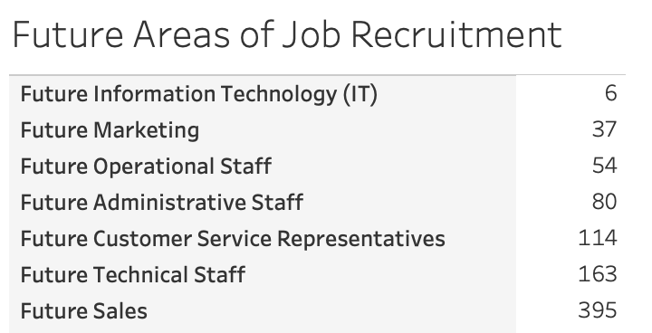

Data Cleaning
In the world of data analysis, one of the most time-consuming yet crucial tasks is data cleaning. Businesses gather raw data from various sources, but without proper cleaning and organization, this data cannot provide actionable insights. In this blog, I will walk you through a practical approach to cleaning and processing a dataset of business vacancies and recruitment areas using Python.

The Problem: Messy and Unusable Data
Imagine working with a dataset containing details about local businesses, their job vacancies, geospatial coordinates, and recruitment priorities. At first glance, the dataset is cluttered with redundant columns, missing values, and complex, unstructured information. Before analysis can even begin, the data must be cleaned, structured, and transformed into a usable format.My Approach
The first step is to set up the environment by importing essential libraries like pandas for data manipulation and geopy for geospatial transformations.
import pandas as pd
from geopy.geocoders import Nominatim
I loaded an Excel file containing raw business vacancy data into a Pandas DataFrame for processing.
file_path = '/content/P1-Unclean-Local-vacancies-mapping-YGA-Q2I-Raw.xlsx'
data_df = pd.read_excel(file_path, sheet_name='Data')
Many datasets include unnecessary columns. We identified and retained only the columns that contribute to the analysis, such as business names, economic sectors, and geospatial coordinates.
relevant_columns = ['_id', 'Business name:', 'Economic sector:', '_Exact Location_latitude', '_Exact Location_longitude', ...]
df = df[relevant_columns].copy()
Missing data, especially in contact details, can cause errors during analysis. To address this, we filled missing phone numbers with "Not Available" for consistency.
df['Phone Number'] = df['Phone Number'].fillna('Not Available')
The dataset contained two separate columns for phone numbers. These were combined into a single column, eliminating duplicates and ensuring clarity.
df['Phone Numbers'] = df.apply(lambda x: list(set([str(x['Phone Number']), str(x['Business Phone Number'])])), axis=1)
df['Phone Numbers'] = df['Phone Numbers'].apply(lambda x: ', '.join(x))
The latitude and longitude columns were combined into a tuple for better usability in geospatial analyses or mapping.
df['Location'] = list(zip(df['_Exact Location_latitude'], df['_Exact Location_longitude']))
Job positions were spread across multiple columns. By consolidating this data into a single column, we made the dataset more structured and easier to query.
df['Job Positions'] = df[job_position_cols].apply(lambda row: {...}, axis=1).apply(str)
I grouped recruitment areas and priority areas into concise dictionaries to represent the data in a user-friendly format.
df['Priority Recruitment Areas'] = df[priority_recruitment_cols].apply(lambda row: {...}, axis=1).apply(str)
df['Recruitment Areas'] = df[recruitment_areas_cols].apply(lambda row: {...}, axis=1).apply(str)

Why This Matters
Clean data is the backbone of effective business decisions. A
structured dataset allows stakeholders to:
Identify trends in job vacancies and recruitment priorities.
Map business locations for geospatial analysis.
Assess
economic sector performance.
Visit GitHub Repository